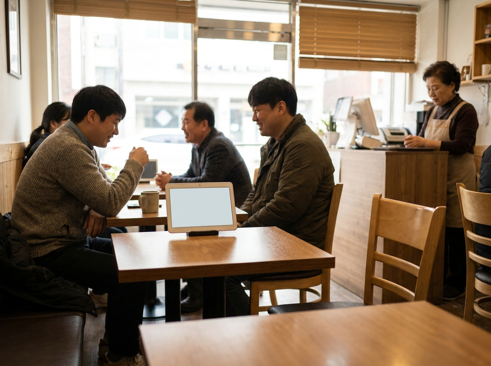
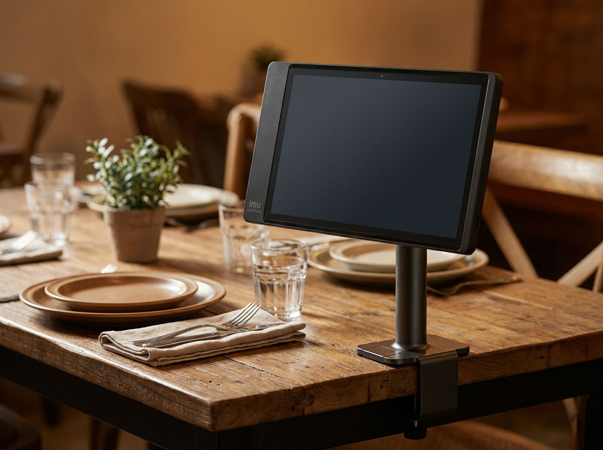
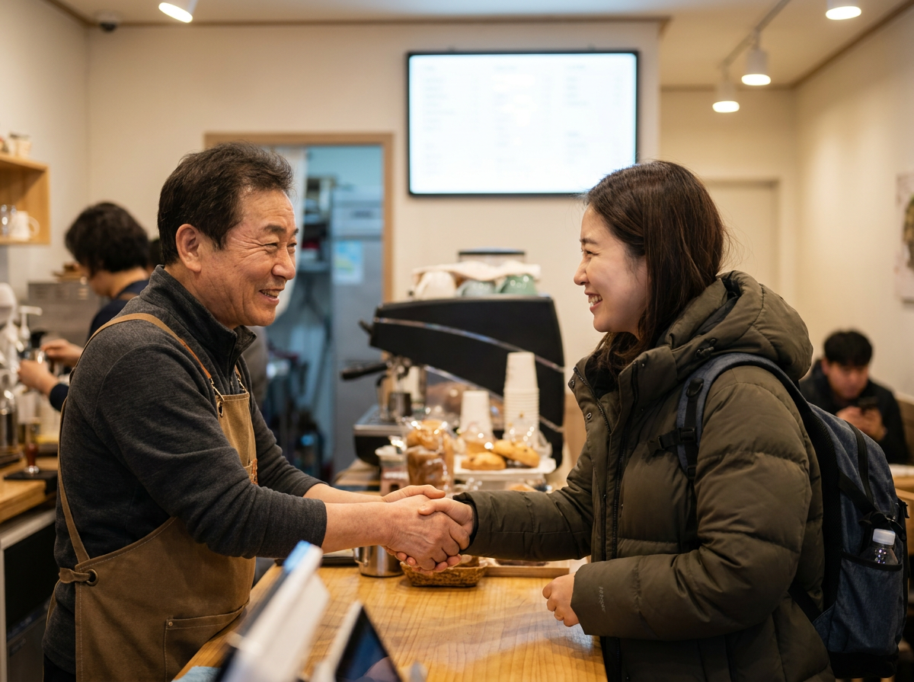

단골 많은 매장은 '리뷰·재방문 관리'부터 다릅니다 — 오늘부터 쓰는 실전법
단골이 많은 매장의 공통점은 맛이나 위치가 아니라 '두 번째 방문을 설계했다'는 데 있습니다. 첫 방문 손님에게 리뷰를 자연스럽게 요청하고, 남긴 리뷰에 정성껏 응대하고, 다시 올 이유(쿠폰·멤버십)를 손에 쥐여 주는 것. 그리고 이 과정을 감이 아니라 포스와 결제 데이터로 관리하는 것입니다. 오늘은 사장님이 바로 적용할 수 있는 리뷰·재방문 관리 실전법을 정리했습니다.

왜 단골 한 명이 신규 열 명보다 중요한가
새 손님을 데려오는 데는 광고비와 시간이 듭니다. 반면 이미 우리 매장을 아는 단골은 별도 비용 없이 다시 오고, 객단가가 높고, 주변에 입소문까지 냅니다. 문제는 대부분의 매장이 '신규 유치'에는 돈을 쓰면서 '재방문 설계'에는 아무것도 하지 않는다는 점입니다. 손님이 계산을 마치고 나가는 순간이 관계의 끝이 아니라 시작이 되어야 합니다.
핵심은 두 가지입니다. 첫째, 첫 방문의 좋은 인상을 '리뷰'라는 기록으로 남기게 하는 것. 둘째, 그 손님이 다시 올 '명분'을 주는 것. 이 둘을 시스템으로 돌리면 단골은 저절로 쌓입니다.
리뷰 요청, 타이밍과 한마디가 전부다
리뷰는 부탁하지 않으면 대부분 남기지 않습니다. 단, 아무 때나 부탁하면 부담스러워합니다. 가장 좋은 타이밍은 손님이 만족을 표현한 직후(맛있다는 말, 웃는 표정)와 결제하는 순간입니다.
부담을 줄이는 요청 멘트의 원칙은 세 가지입니다. 짧게, 이유를 붙여서, 보상을 살짝 얹어서. 예를 들어 "저희 같은 작은 가게는 리뷰 한 줄이 정말 큰 힘이 됩니다. 남겨 주시면 다음에 음료 서비스 드릴게요" 정도면 충분합니다. 테이블 위 안내판이나 영수증, 결제 후 안내 문구도 조용한 리뷰 요청 장치가 됩니다.
주의할 점은 특정 플랫폼의 리뷰 정책은 수시로 바뀌고 대가성 리뷰를 제한하는 경우가 있으므로, 규정을 확인하고 '솔직한 후기 요청'이라는 원칙 안에서 운영해야 한다는 것입니다.
리뷰 응대, 좋은 리뷰보다 나쁜 리뷰가 기회다
리뷰는 남기는 것보다 응대하는 것이 더 중요합니다. 응대를 보고 예비 손님이 매장의 태도를 판단하기 때문입니다. 유형별로 접근이 다릅니다.
| 리뷰 유형 | 응대 원칙 | 하지 말아야 할 것 |
|---|---|---|
| 칭찬 리뷰 | 24시간 안에, 구체적으로 감사 표현 | 복붙 티 나는 똑같은 답변 |
| 아쉬움·불만 리뷰 | 먼저 사과·공감 → 개선 약속 → 재방문 유도 | 변명·반박·감정적 대응 |
| 사실과 다른 리뷰 | 정중하게 사실관계만 설명 | 언쟁, 손님 비난 |
| 무응답·별점만 | 감사 인사로 대화 물꼬 | 방치 |
핵심은 불만 리뷰를 지우거나 싸우려 하지 말고 '공개 사과+개선'으로 되돌리는 것입니다. 잘 응대된 불만 리뷰 하나가 칭찬 리뷰 열 개보다 신뢰를 줍니다.

다시 오게 만드는 장치 — 쿠폰·멤버십·단골 관리
재방문은 '다음에 또 오세요'라는 말이 아니라 손에 쥐여 주는 명분에서 나옵니다.
- 쿠폰: 다음 방문 때 쓸 수 있는 할인·서비스 쿠폰을 결제 시점에 발급. 유효기간을 짧게(2~3주) 두면 재방문 주기가 빨라집니다.
- 스탬프·멤버십: 방문 횟수를 적립해 보상하는 구조. 종이 도장판도 좋지만, 포스에 연동하면 누락·분실이 없습니다.
- 단골 등급 관리: 방문·구매가 많은 손님을 구분해 작은 특별대우(서비스, 우선 예약)를 하면 충성도가 올라갑니다.
여기서 대부분의 사장님이 막히는 지점이 있습니다. "누가 단골인지 어떻게 알죠?" 감으로 얼굴을 기억하는 데는 한계가 있습니다. 이때 필요한 것이 매장 데이터입니다.
포스·결제 데이터로 단골을 '보이게' 만들기
누가 얼마나 자주 오는지, 무엇을 사는지, 어떤 시간대에 붐비는지는 이미 매장의 포스와 결제 기록 안에 쌓여 있습니다. 이 데이터를 들여다보면 감으로 하던 단골 관리를 숫자로 할 수 있습니다.
| 관리 포인트 | 신규 손님 | 단골 손님 |
|---|---|---|
| 목표 | 첫인상·리뷰 확보 | 재방문 주기 유지 |
| 활용 데이터 | 첫 결제·메뉴 | 방문 빈도·객단가·선호 메뉴 |
| 핵심 장치 | 리뷰 요청·첫 방문 쿠폰 | 멤버십·등급·맞춤 혜택 |
| 대화 톤 | 환영·안내 | 기억·인정("자주 오시죠") |
포스에서 시간대·요일별 매출을 보면 한가한 시간에 쿠폰을 집중 발급할 타이밍이 보이고, 인기 메뉴 데이터를 보면 리뷰 요청에 쓸 대표 메뉴가 잡힙니다. 테이블오더나 키오스크를 함께 쓰면 주문·재방문 데이터가 더 촘촘하게 남아 단골 파악이 쉬워집니다. 결국 좋은 결제·포스 구성은 '계산기'가 아니라 '단골 관리 도구'입니다.

자주 묻는 질문(FAQ)
Q. 손님에게 리뷰를 요청하면 부담스러워하지 않을까요?
요청 방식의 문제입니다. 강요가 아니라 "큰 힘이 된다"는 진심을 짧게 전하고 작은 보상을 곁들이면 대부분 흔쾌히 남깁니다. 만족을 표현한 직후가 가장 자연스럽습니다.
Q. 나쁜 리뷰가 달렸는데 지우는 게 낫나요?
지우기보다 잘 응대하는 편이 낫습니다. 먼저 공감·사과하고 개선을 약속하는 답글은 오히려 매장의 신뢰를 높입니다. 예비 손님은 리뷰 내용보다 사장님의 대응을 봅니다.
Q. 종이 스탬프 대신 포스 멤버십을 쓰면 뭐가 좋나요?
분실·중복 적립이 없고, 누가 단골인지 데이터로 남습니다. 방문 빈도·선호 메뉴까지 파악돼 맞춤 혜택을 줄 수 있어 재방문 관리가 훨씬 정교해집니다.
Q. 우리 매장에 맞는 포스·결제 구성은 어떻게 정하나요?
업종·좌석수·객단가·운영 방식에 따라 적합한 구성이 다릅니다. 누리네트웍스는 수도권 직접 설치로 매장을 보고 맞는 구성을 제안해 드립니다. 자세한 내용은 상담 시 안내드립니다.
상담 안내
포스·테이블오더·키오스크·결제단말까지, 단골 관리에 도움이 되는 매장 구성이 궁금하시면 편하게 문의 주세요. 누리네트웍스는 14년간 3만여 매장과 함께해 온 수도권 직접 설치 업체로, 200곳 이상의 설치 레퍼런스를 보유하고 있습니다. 매장을 직접 보고 맞는 구성을 안내드립니다.
- 📞 전화상담 1544-7754
- 🌐 홈페이지 nwpos.co.kr


- 단골이 북적이는 매장은 두 번째 방문을 설계합니다.
- 포스·테이블오더 데이터로 단골을 숫자로 관리하세요.
- 리뷰 요청부터 재방문 쿠폰까지, 결제 흐름 안에서 자연스럽게.